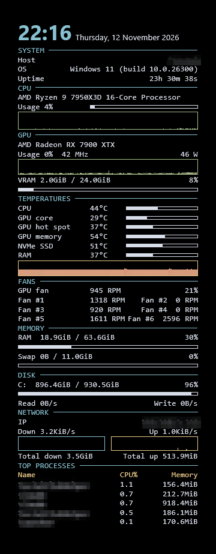

A conky-style system monitor for Windows 10 and 11. Live stats drawn straight onto your desktop, controlled by one plain-text file.

Clock, CPU use per core, memory, every drive with its read and write speed, network speeds and addresses, top processes, battery.
CPU and GPU temperatures, fan speeds, GPU load, clocks, power and VRAM, on AMD, NVIDIA and Intel. Read by a small service that only runs while congee does.
Conditions, colours, fonts, bars and graphs, and the output of any command. Most conky configs work as they are.
Save the file and the widget updates within a second. No restart, no settings windows.
alignment top_right
color1 88c0d0
TEXT
${color1}CPU${color} ${cpu}%${alignr}${cpubar 6,120}
Temp ${cpu_temp}°C GPU ${gpu_temp}°C
RAM ${mem} / ${memmax}${alignr}${memperc}%
${if_up Ethernet}IP${alignr}${addr Ethernet}
${endif}${time %H:%M}
New to it? The config guide walks through editing it step by step, with examples and recipes. The README lists every setting and variable.